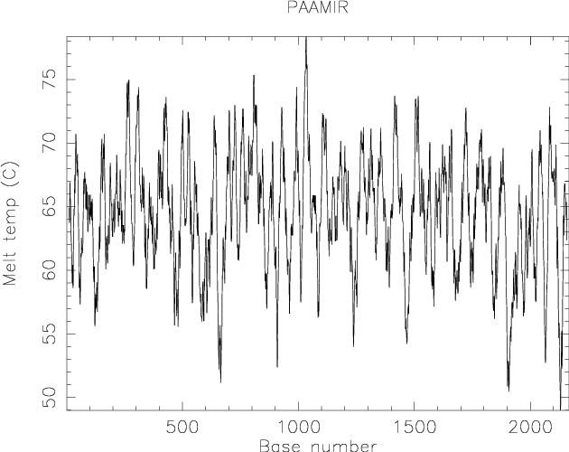

|
|
dan |
Please help by correcting and extending the Wiki pages.
Dan calculates the melting temperature (Tm) and the percentage of G+C nucleotides for windows over a nucleic acid sequence, optionally plotting them. If a plot is not being produced, dan reports the sequence of each oligomer window, its melting temperature under the specified conditions and its percentage GC content. The change in enthalpy (H), entropy (S) and Gibbs free energy (S) for dissociation of the oligomers may (optionally) be reported to file (but not plotted).
The values of melting point and other thermodynamic properties of the sequence, namely change in enthalpy (H), entropy (S) and Gibbs free energy (S) on dissociation, are calculated for a sequence region (or "window") of a user-specified size (see "-windowsize" option). The window is incrementally moved along the sequence with the properties being calculated at each new position. The user must provide the salt and DNA concentration. Optionally, the percent formamide, percent of mismatches allowed and product length may be specified.
For the melting temperature profile, free energy values calculated from nearest neighbor thermodynamics are used (Breslauer et al. Proc. Natl. Acad. Sci. USA 83, 3746-3750, Baldino et al. Methods in Enzymol. 168, 761-777, Allawi and SantaLucia (1997), Biochemistry 36:10581-10594).
% dan Calculates nucleic acid melting temperature Input nucleotide sequence(s): tembl:x13776 Enter window size [20]: Enter Shift Increment [1]: Enter DNA concentration (nM) [50.]: Enter salt concentration (mM) [50.]: Output report [x13776.dan]: |
Go to the input files for this example
Go to the output files for this example
Example 2
An example of producing a plot of Tm:
% dan -plot -graph cps Calculates nucleic acid melting temperature Input nucleotide sequence(s): tembl:x13776 Enter window size [20]: Enter Shift Increment [1]: Enter DNA concentration (nM) [50.]: Enter salt concentration (mM) [50.]: Enter minimum temperature [55.]: Created dan.ps |
Go to the output files for this example
Calculates nucleic acid melting temperature
Version: EMBOSS:6.4.0.0
Standard (Mandatory) qualifiers (* if not always prompted):
[-sequence] seqall Nucleotide sequence(s) filename and optional
format, or reference (input USA)
-windowsize integer [20] The values of melting point and other
thermodynamic properties of the sequence are
determined by taking a short length of
sequence known as a window and determining
the properties of the sequence in that
window. The window is incrementally moved
along the sequence with the properties being
calculated at each new position. (Integer
from 1 to 100)
-shiftincrement integer [1] This is the amount by which the window
is moved at each increment in order to find
the melting point and other properties along
the sequence. (Integer 1 or more)
-dnaconc float [50.] Enter DNA concentration (nM) (Number
from 1.000 to 100000.000)
-saltconc float [50.] Enter salt concentration (mM) (Number
from 1.000 to 1000.000)
* -mintemp float [55.] Enter a minimum value for the
temperature scale (y-axis) of the plot.
(Number from 0.000 to 150.000)
* -graph xygraph [$EMBOSS_GRAPHICS value, or x11] Graph type
(ps, hpgl, hp7470, hp7580, meta, cps, x11,
tek, tekt, none, data, xterm, png, gif, pdf,
svg)
* -outfile report [*.dan] If a plot is not being produced then
data on the melting point etc. in each
window along the sequence is output to the
file. (default -rformat seqtable)
Additional (Optional) qualifiers (* if not always prompted):
-product toggle This prompts for percent formamide, percent
of mismatches allowed and product length.
* -formamide float [0.] This specifies the percent formamide to
be used in calculations (it is ignored
unless -product is used). (Number from 0.000
to 100.000)
* -mismatch float [0.] This specifies the percent mismatch to
be used in calculations (it is ignored
unless -product is used). (Number from 0.000
to 100.000)
* -prodlen integer [Window size (20)] This specifies the
product length to be used in calculations
(it is ignored unless -product is used).
(Any integer value)
-thermo toggle Output the DeltaG, DeltaH and DeltaS values
of the sequence windows to the output data
file.
* -temperature float [25.] If -thermo has been specified then
this specifies the temperature at which to
calculate the DeltaG, DeltaH and DeltaS
values. (Number from 0.000 to 100.000)
Advanced (Unprompted) qualifiers:
-rna boolean This specifies that the sequence is an RNA
sequence and not a DNA sequence.
-plot toggle If this is not specified then the file of
output data is produced, else a plot of the
melting point along the sequence is
produced.
Associated qualifiers:
"-sequence" associated qualifiers
-sbegin1 integer Start of each sequence to be used
-send1 integer End of each sequence to be used
-sreverse1 boolean Reverse (if DNA)
-sask1 boolean Ask for begin/end/reverse
-snucleotide1 boolean Sequence is nucleotide
-sprotein1 boolean Sequence is protein
-slower1 boolean Make lower case
-supper1 boolean Make upper case
-sformat1 string Input sequence format
-sdbname1 string Database name
-sid1 string Entryname
-ufo1 string UFO features
-fformat1 string Features format
-fopenfile1 string Features file name
"-graph" associated qualifiers
-gprompt boolean Graph prompting
-gdesc string Graph description
-gtitle string Graph title
-gsubtitle string Graph subtitle
-gxtitle string Graph x axis title
-gytitle string Graph y axis title
-goutfile string Output file for non interactive displays
-gdirectory string Output directory
"-outfile" associated qualifiers
-rformat string Report format
-rname string Base file name
-rextension string File name extension
-rdirectory string Output directory
-raccshow boolean Show accession number in the report
-rdesshow boolean Show description in the report
-rscoreshow boolean Show the score in the report
-rstrandshow boolean Show the nucleotide strand in the report
-rusashow boolean Show the full USA in the report
-rmaxall integer Maximum total hits to report
-rmaxseq integer Maximum hits to report for one sequence
General qualifiers:
-auto boolean Turn off prompts
-stdout boolean Write first file to standard output
-filter boolean Read first file from standard input, write
first file to standard output
-options boolean Prompt for standard and additional values
-debug boolean Write debug output to program.dbg
-verbose boolean Report some/full command line options
-help boolean Report command line options and exit. More
information on associated and general
qualifiers can be found with -help -verbose
-warning boolean Report warnings
-error boolean Report errors
-fatal boolean Report fatal errors
-die boolean Report dying program messages
-version boolean Report version number and exit
|
| Qualifier | Type | Description | Allowed values | Default |
|---|---|---|---|---|
| Standard (Mandatory) qualifiers | ||||
| [-sequence] (Parameter 1) |
seqall | Nucleotide sequence(s) filename and optional format, or reference (input USA) | Readable sequence(s) | Required |
| -windowsize | integer | The values of melting point and other thermodynamic properties of the sequence are determined by taking a short length of sequence known as a window and determining the properties of the sequence in that window. The window is incrementally moved along the sequence with the properties being calculated at each new position. | Integer from 1 to 100 | 20 |
| -shiftincrement | integer | This is the amount by which the window is moved at each increment in order to find the melting point and other properties along the sequence. | Integer 1 or more | 1 |
| -dnaconc | float | Enter DNA concentration (nM) | Number from 1.000 to 100000.000 | 50. |
| -saltconc | float | Enter salt concentration (mM) | Number from 1.000 to 1000.000 | 50. |
| -mintemp | float | Enter a minimum value for the temperature scale (y-axis) of the plot. | Number from 0.000 to 150.000 | 55. |
| -graph | xygraph | Graph type | EMBOSS has a list of known devices, including ps, hpgl, hp7470, hp7580, meta, cps, x11, tek, tekt, none, data, xterm, png, gif, pdf, svg | EMBOSS_GRAPHICS value, or x11 |
| -outfile | report | If a plot is not being produced then data on the melting point etc. in each window along the sequence is output to the file. | (default -rformat seqtable) | <*>.dan |
| Additional (Optional) qualifiers | ||||
| -product | toggle | This prompts for percent formamide, percent of mismatches allowed and product length. | Toggle value Yes/No | No |
| -formamide | float | This specifies the percent formamide to be used in calculations (it is ignored unless -product is used). | Number from 0.000 to 100.000 | 0. |
| -mismatch | float | This specifies the percent mismatch to be used in calculations (it is ignored unless -product is used). | Number from 0.000 to 100.000 | 0. |
| -prodlen | integer | This specifies the product length to be used in calculations (it is ignored unless -product is used). | Any integer value | Window size (20) |
| -thermo | toggle | Output the DeltaG, DeltaH and DeltaS values of the sequence windows to the output data file. | Toggle value Yes/No | No |
| -temperature | float | If -thermo has been specified then this specifies the temperature at which to calculate the DeltaG, DeltaH and DeltaS values. | Number from 0.000 to 100.000 | 25. |
| Advanced (Unprompted) qualifiers | ||||
| -rna | boolean | This specifies that the sequence is an RNA sequence and not a DNA sequence. | Boolean value Yes/No | No |
| -plot | toggle | If this is not specified then the file of output data is produced, else a plot of the melting point along the sequence is produced. | Toggle value Yes/No | No |
| Associated qualifiers | ||||
| "-sequence" associated seqall qualifiers | ||||
| -sbegin1 -sbegin_sequence |
integer | Start of each sequence to be used | Any integer value | 0 |
| -send1 -send_sequence |
integer | End of each sequence to be used | Any integer value | 0 |
| -sreverse1 -sreverse_sequence |
boolean | Reverse (if DNA) | Boolean value Yes/No | N |
| -sask1 -sask_sequence |
boolean | Ask for begin/end/reverse | Boolean value Yes/No | N |
| -snucleotide1 -snucleotide_sequence |
boolean | Sequence is nucleotide | Boolean value Yes/No | N |
| -sprotein1 -sprotein_sequence |
boolean | Sequence is protein | Boolean value Yes/No | N |
| -slower1 -slower_sequence |
boolean | Make lower case | Boolean value Yes/No | N |
| -supper1 -supper_sequence |
boolean | Make upper case | Boolean value Yes/No | N |
| -sformat1 -sformat_sequence |
string | Input sequence format | Any string | |
| -sdbname1 -sdbname_sequence |
string | Database name | Any string | |
| -sid1 -sid_sequence |
string | Entryname | Any string | |
| -ufo1 -ufo_sequence |
string | UFO features | Any string | |
| -fformat1 -fformat_sequence |
string | Features format | Any string | |
| -fopenfile1 -fopenfile_sequence |
string | Features file name | Any string | |
| "-graph" associated xygraph qualifiers | ||||
| -gprompt | boolean | Graph prompting | Boolean value Yes/No | N |
| -gdesc | string | Graph description | Any string | DNA melting plot |
| -gtitle | string | Graph title | Any string | |
| -gsubtitle | string | Graph subtitle | Any string | |
| -gxtitle | string | Graph x axis title | Any string | |
| -gytitle | string | Graph y axis title | Any string | |
| -goutfile | string | Output file for non interactive displays | Any string | |
| -gdirectory | string | Output directory | Any string | |
| "-outfile" associated report qualifiers | ||||
| -rformat | string | Report format | Any string | seqtable |
| -rname | string | Base file name | Any string | |
| -rextension | string | File name extension | Any string | |
| -rdirectory | string | Output directory | Any string | |
| -raccshow | boolean | Show accession number in the report | Boolean value Yes/No | N |
| -rdesshow | boolean | Show description in the report | Boolean value Yes/No | N |
| -rscoreshow | boolean | Show the score in the report | Boolean value Yes/No | Y |
| -rstrandshow | boolean | Show the nucleotide strand in the report | Boolean value Yes/No | Y |
| -rusashow | boolean | Show the full USA in the report | Boolean value Yes/No | N |
| -rmaxall | integer | Maximum total hits to report | Any integer value | 0 |
| -rmaxseq | integer | Maximum hits to report for one sequence | Any integer value | 0 |
| General qualifiers | ||||
| -auto | boolean | Turn off prompts | Boolean value Yes/No | N |
| -stdout | boolean | Write first file to standard output | Boolean value Yes/No | N |
| -filter | boolean | Read first file from standard input, write first file to standard output | Boolean value Yes/No | N |
| -options | boolean | Prompt for standard and additional values | Boolean value Yes/No | N |
| -debug | boolean | Write debug output to program.dbg | Boolean value Yes/No | N |
| -verbose | boolean | Report some/full command line options | Boolean value Yes/No | Y |
| -help | boolean | Report command line options and exit. More information on associated and general qualifiers can be found with -help -verbose | Boolean value Yes/No | N |
| -warning | boolean | Report warnings | Boolean value Yes/No | Y |
| -error | boolean | Report errors | Boolean value Yes/No | Y |
| -fatal | boolean | Report fatal errors | Boolean value Yes/No | Y |
| -die | boolean | Report dying program messages | Boolean value Yes/No | Y |
| -version | boolean | Report version number and exit | Boolean value Yes/No | N |
The input is a standard EMBOSS sequence query (also known as a 'USA').
Major sequence database sources defined as standard in EMBOSS installations include srs:embl, srs:uniprot and ensembl
Data can also be read from sequence output in any supported format written by an EMBOSS or third-party application.
The input format can be specified by using the command-line qualifier -sformat xxx, where 'xxx' is replaced by the name of the required format. The available format names are: gff (gff3), gff2, embl (em), genbank (gb, refseq), ddbj, refseqp, pir (nbrf), swissprot (swiss, sw), dasgff and debug.
See: http://emboss.sf.net/docs/themes/SequenceFormats.html for further information on sequence formats.
ID X13776; SV 1; linear; genomic DNA; STD; PRO; 2167 BP.
XX
AC X13776; M43175;
XX
DT 19-APR-1989 (Rel. 19, Created)
DT 14-NOV-2006 (Rel. 89, Last updated, Version 24)
XX
DE Pseudomonas aeruginosa amiC and amiR gene for aliphatic amidase regulation
XX
KW aliphatic amidase regulator; amiC gene; amiR gene.
XX
OS Pseudomonas aeruginosa
OC Bacteria; Proteobacteria; Gammaproteobacteria; Pseudomonadales;
OC Pseudomonadaceae; Pseudomonas.
XX
RN [1]
RP 1167-2167
RA Rice P.M.;
RT ;
RL Submitted (16-DEC-1988) to the EMBL/GenBank/DDBJ databases.
RL Rice P.M., EMBL, Postfach 10-2209, Meyerhofstrasse 1, 6900 Heidelberg, FRG.
XX
RN [2]
RP 1167-2167
RX DOI; 10.1016/0014-5793(89)80249-2.
RX PUBMED; 2495988.
RA Lowe N., Rice P.M., Drew R.E.;
RT "Nucleotide sequence of the aliphatic amidase regulator gene (amiR) of
RT Pseudomonas aeruginosa";
RL FEBS Lett. 246(1-2):39-43(1989).
XX
RN [3]
RP 1-1292
RX PUBMED; 1907262.
RA Wilson S., Drew R.;
RT "Cloning and DNA sequence of amiC, a new gene regulating expression of the
RT Pseudomonas aeruginosa aliphatic amidase, and purification of the amiC
RT product";
RL J. Bacteriol. 173(16):4914-4921(1991).
XX
RN [4]
RP 1-2167
RA Rice P.M.;
RT ;
RL Submitted (04-SEP-1991) to the EMBL/GenBank/DDBJ databases.
RL Rice P.M., EMBL, Postfach 10-2209, Meyerhofstrasse 1, 6900 Heidelberg, FRG.
XX
DR GOA; Q51417.
DR InterPro; IPR003211; AmiSUreI_transpt.
DR UniProtKB/Swiss-Prot; Q51417; AMIS_PSEAE.
[Part of this file has been deleted for brevity]
FT /replace=""
FT /note="ClaI fragment deleted in pSW36, constitutive
FT phenotype"
FT misc_feature 1
FT /note="last base of an XhoI site"
FT misc_feature 648..653
FT /note="end of 658bp XhoI fragment, deletion in pSW3 causes
FT constitutive expression of amiE"
FT conflict 1281
FT /replace="g"
FT /citation=[3]
XX
SQ Sequence 2167 BP; 363 A; 712 C; 730 G; 362 T; 0 other;
ggtaccgctg gccgagcatc tgctcgatca ccaccagccg ggcgacggga actgcacgat 60
ctacctggcg agcctggagc acgagcgggt tcgcttcgta cggcgctgag cgacagtcac 120
aggagaggaa acggatggga tcgcaccagg agcggccgct gatcggcctg ctgttctccg 180
aaaccggcgt caccgccgat atcgagcgct cgcacgcgta tggcgcattg ctcgcggtcg 240
agcaactgaa ccgcgagggc ggcgtcggcg gtcgcccgat cgaaacgctg tcccaggacc 300
ccggcggcga cccggaccgc tatcggctgt gcgccgagga cttcattcgc aaccgggggg 360
tacggttcct cgtgggctgc tacatgtcgc acacgcgcaa ggcggtgatg ccggtggtcg 420
agcgcgccga cgcgctgctc tgctacccga ccccctacga gggcttcgag tattcgccga 480
acatcgtcta cggcggtccg gcgccgaacc agaacagtgc gccgctggcg gcgtacctga 540
ttcgccacta cggcgagcgg gtggtgttca tcggctcgga ctacatctat ccgcgggaaa 600
gcaaccatgt gatgcgccac ctgtatcgcc agcacggcgg cacggtgctc gaggaaatct 660
acattccgct gtatccctcc gacgacgact tgcagcgcgc cgtcgagcgc atctaccagg 720
cgcgcgccga cgtggtcttc tccaccgtgg tgggcaccgg caccgccgag ctgtatcgcg 780
ccatcgcccg tcgctacggc gacggcaggc ggccgccgat cgccagcctg accaccagcg 840
aggcggaggt ggcgaagatg gagagtgacg tggcagaggg gcaggtggtg gtcgcgcctt 900
acttctccag catcgatacg cccgccagcc gggccttcgt ccaggcctgc catggtttct 960
tcccggagaa cgcgaccatc accgcctggg ccgaggcggc ctactggcag accttgttgc 1020
tcggccgcgc cgcgcaggcc gcaggcaact ggcgggtgga agacgtgcag cggcacctgt 1080
acgacatcga catcgacgcg ccacaggggc cggtccgggt ggagcgccag aacaaccaca 1140
gccgcctgtc ttcgcgcatc gcggaaatcg atgcgcgcgg cgtgttccag gtccgctggc 1200
agtcgcccga accgattcgc cccgaccctt atgtcgtcgt gcataacctc gacgactggt 1260
ccgccagcat gggcggggga ccgctcccat gagcgccaac tcgctgctcg gcagcctgcg 1320
cgagttgcag gtgctggtcc tcaacccgcc gggggaggtc agcgacgccc tggtcttgca 1380
gctgatccgc atcggttgtt cggtgcgcca gtgctggccg ccgccggaag ccttcgacgt 1440
gccggtggac gtggtcttca ccagcatttt ccagaatggc caccacgacg agatcgctgc 1500
gctgctcgcc gccgggactc cgcgcactac cctggtggcg ctggtggagt acgaaagccc 1560
cgcggtgctc tcgcagatca tcgagctgga gtgccacggc gtgatcaccc agccgctcga 1620
tgcccaccgg gtgctgcctg tgctggtatc ggcgcggcgc atcagcgagg aaatggcgaa 1680
gctgaagcag aagaccgagc agctccagga ccgcatcgcc ggccaggccc ggatcaacca 1740
ggccaaggtg ttgctgatgc agcgccatgg ctgggacgag cgcgaggcgc accagcacct 1800
gtcgcgggaa gcgatgaagc ggcgcgagcc gatcctgaag atcgctcagg agttgctggg 1860
aaacgagccg tccgcctgag cgatccgggc cgaccagaac aataacaaga ggggtatcgt 1920
catcatgctg ggactggttc tgctgtacgt tggcgcggtg ctgtttctca atgccgtctg 1980
gttgctgggc aagatcagcg gtcgggaggt ggcggtgatc aacttcctgg tcggcgtgct 2040
gagcgcctgc gtcgcgttct acctgatctt ttccgcagca gccgggcagg gctcgctgaa 2100
ggccggagcg ctgaccctgc tattcgcttt tacctatctg tgggtggccg ccaaccagtt 2160
cctcgag 2167
//
|
The output is a standard EMBOSS report file.
The results can be output in one of several styles by using the command-line qualifier -rformat xxx, where 'xxx' is replaced by the name of the required format. The available format names are: embl, genbank, gff, pir, swiss, dasgff, debug, listfile, dbmotif, diffseq, draw, restrict, excel, feattable, motif, nametable, regions, seqtable, simple, srs, table, tagseq.
See: http://emboss.sf.net/docs/themes/ReportFormats.html for further information on report formats.
By default dan writes a 'seqtable' report file.
The output is to the specified graphics device.
The results can be output in one of several formats by using the command-line qualifier -graph xxx, where 'xxx' is replaced by the name of the required device. Support depends on the availability of third-party software packages.
The device names that output to a file are: ps (postscript), cps (colourps), png, gif, pdf, svg, hpgl, hp7470, hp7580, das, data.
The other available device names are: meta, x11 (xwindows), tek (tek4107t), tekt (tektronix), xterm, text.
Output can be turned off by specifying none (null).
See: http://emboss.sf.net/docs/themes/GraphicsDevices.html for further information on supported devices.
If the -plot qualifier is used, graphical output is produced instead.
########################################
# Program: dan
# Rundate: Fri 15 Jul 2011 12:00:00
# Commandline: dan
# -sequence tembl:x13776
# Report_format: seqtable
# Report_file: x13776.dan
########################################
#=======================================
#
# Sequence: X13776 from: 1 to: 2167
# HitCount: 2148
#=======================================
Start End Strand Tm GC DeltaG DeltaH DeltaS TmProd Sequence
1 20 + 64.9 70.0 . . . . ggtaccgctggccgagcatc
2 21 + 63.7 65.0 . . . . gtaccgctggccgagcatct
3 22 + 63.7 65.0 . . . . taccgctggccgagcatctg
4 23 + 66.9 70.0 . . . . accgctggccgagcatctgc
5 24 + 66.7 70.0 . . . . ccgctggccgagcatctgct
6 25 + 65.5 70.0 . . . . cgctggccgagcatctgctc
7 26 + 65.5 70.0 . . . . gctggccgagcatctgctcg
8 27 + 63.7 65.0 . . . . ctggccgagcatctgctcga
9 28 + 62.9 60.0 . . . . tggccgagcatctgctcgat
10 29 + 62.6 65.0 . . . . ggccgagcatctgctcgatc
11 30 + 61.7 60.0 . . . . gccgagcatctgctcgatca
12 31 + 60.2 60.0 . . . . ccgagcatctgctcgatcac
13 32 + 60.2 60.0 . . . . cgagcatctgctcgatcacc
14 33 + 59.0 55.0 . . . . gagcatctgctcgatcacca
15 34 + 59.2 55.0 . . . . agcatctgctcgatcaccac
16 35 + 60.4 60.0 . . . . gcatctgctcgatcaccacc
17 36 + 58.9 55.0 . . . . catctgctcgatcaccacca
18 37 + 58.6 55.0 . . . . atctgctcgatcaccaccag
19 38 + 61.3 60.0 . . . . tctgctcgatcaccaccagc
20 39 + 62.4 65.0 . . . . ctgctcgatcaccaccagcc
21 40 + 63.9 65.0 . . . . tgctcgatcaccaccagccg
22 41 + 64.9 70.0 . . . . gctcgatcaccaccagccgg
23 42 + 64.3 70.0 . . . . ctcgatcaccaccagccggg
24 43 + 66.1 70.0 . . . . tcgatcaccaccagccgggc
25 44 + 67.5 75.0 . . . . cgatcaccaccagccgggcg
26 45 + 66.1 70.0 . . . . gatcaccaccagccgggcga
27 46 + 66.3 70.0 . . . . atcaccaccagccgggcgac
28 47 + 68.6 75.0 . . . . tcaccaccagccgggcgacg
29 48 + 69.8 80.0 . . . . caccaccagccgggcgacgg
30 49 + 70.7 80.0 . . . . accaccagccgggcgacggg
31 50 + 70.5 80.0 . . . . ccaccagccgggcgacggga
32 51 + 68.6 75.0 . . . . caccagccgggcgacgggaa
33 52 + 68.6 75.0 . . . . accagccgggcgacgggaac
34 53 + 68.4 75.0 . . . . ccagccgggcgacgggaact
[Part of this file has been deleted for brevity]
2101 2120 + 69.9 80.0 . . . . ggccggagcgctgaccctgc
2102 2121 + 68.7 75.0 . . . . gccggagcgctgaccctgct
2103 2122 + 65.5 70.0 . . . . ccggagcgctgaccctgcta
2104 2123 + 63.5 65.0 . . . . cggagcgctgaccctgctat
2105 2124 + 61.3 60.0 . . . . ggagcgctgaccctgctatt
2106 2125 + 60.1 60.0 . . . . gagcgctgaccctgctattc
2107 2126 + 61.7 60.0 . . . . agcgctgaccctgctattcg
2108 2127 + 63.4 65.0 . . . . gcgctgaccctgctattcgc
2109 2128 + 61.7 60.0 . . . . cgctgaccctgctattcgct
2110 2129 + 59.5 55.0 . . . . gctgaccctgctattcgctt
2111 2130 + 57.1 50.0 . . . . ctgaccctgctattcgcttt
2112 2131 + 56.4 45.0 . . . . tgaccctgctattcgctttt
2113 2132 + 54.7 45.0 . . . . gaccctgctattcgctttta
2114 2133 + 55.0 45.0 . . . . accctgctattcgcttttac
2115 2134 + 55.9 50.0 . . . . ccctgctattcgcttttacc
2116 2135 + 54.7 45.0 . . . . cctgctattcgcttttacct
2117 2136 + 52.0 40.0 . . . . ctgctattcgcttttaccta
2118 2137 + 51.2 35.0 . . . . tgctattcgcttttacctat
2119 2138 + 50.9 40.0 . . . . gctattcgcttttacctatc
2120 2139 + 49.0 35.0 . . . . ctattcgcttttacctatct
2121 2140 + 49.3 35.0 . . . . tattcgcttttacctatctg
2122 2141 + 51.1 35.0 . . . . attcgcttttacctatctgt
2123 2142 + 52.2 40.0 . . . . ttcgcttttacctatctgtg
2124 2143 + 54.0 45.0 . . . . tcgcttttacctatctgtgg
2125 2144 + 55.2 50.0 . . . . cgcttttacctatctgtggg
2126 2145 + 53.9 45.0 . . . . gcttttacctatctgtgggt
2127 2146 + 52.3 45.0 . . . . cttttacctatctgtgggtg
2128 2147 + 53.5 45.0 . . . . ttttacctatctgtgggtgg
2129 2148 + 56.0 50.0 . . . . tttacctatctgtgggtggc
2130 2149 + 57.8 55.0 . . . . ttacctatctgtgggtggcc
2131 2150 + 60.1 60.0 . . . . tacctatctgtgggtggccg
2132 2151 + 63.4 65.0 . . . . acctatctgtgggtggccgc
2133 2152 + 64.3 70.0 . . . . cctatctgtgggtggccgcc
2134 2153 + 63.4 65.0 . . . . ctatctgtgggtggccgcca
2135 2154 + 62.7 60.0 . . . . tatctgtgggtggccgccaa
2136 2155 + 64.5 65.0 . . . . atctgtgggtggccgccaac
2137 2156 + 66.5 70.0 . . . . tctgtgggtggccgccaacc
2138 2157 + 66.8 70.0 . . . . ctgtgggtggccgccaacca
2139 2158 + 66.8 70.0 . . . . tgtgggtggccgccaaccag
2140 2159 + 66.8 70.0 . . . . gtgggtggccgccaaccagt
2141 2160 + 65.9 65.0 . . . . tgggtggccgccaaccagtt
2142 2161 + 65.6 70.0 . . . . gggtggccgccaaccagttc
2143 2162 + 65.6 70.0 . . . . ggtggccgccaaccagttcc
2144 2163 + 64.4 65.0 . . . . gtggccgccaaccagttcct
2145 2164 + 64.1 65.0 . . . . tggccgccaaccagttcctc
2146 2165 + 65.4 70.0 . . . . ggccgccaaccagttcctcg
2147 2166 + 64.2 65.0 . . . . gccgccaaccagttcctcga
2148 2167 + 62.4 65.0 . . . . ccgccaaccagttcctcgag
#---------------------------------------
#---------------------------------------
|

The header information contains details of the program, date and sequence
Subsequent lines contain columns of data for each window into the sequence as it is moved along, giving:
If the qualifier '-product' is used to make the program prompt for percent formamide percent of mismatches allowed and product length, then the output includes the melting temperature of the specified product.
If the qualifier '-thermo' is gived then the DeltaG, DeltaH and DeltaS of the sequence in the window is also output.
EMBOSS data files are distributed with the application and stored in the standard EMBOSS data directory, which is defined by the EMBOSS environment variable EMBOSS_DATA.
To see the available EMBOSS data files, run:
% embossdata -showall
To fetch one of the data files (for example 'Exxx.dat') into your current directory for you to inspect or modify, run:
% embossdata -fetch -file Exxx.dat
Users can provide their own data files in their own directories. Project specific files can be put in the current directory, or for tidier directory listings in a subdirectory called ".embossdata". Files for all EMBOSS runs can be put in the user's home directory, or again in a subdirectory called ".embossdata".
The directories are searched in the following order:
The enthalpy of a reaction equates to the "heat" of the reaction so long as temperate and pressure are constant. Enthalpy depends upon the strength of the chemical bonds and non-bonding interactions involved. The entropy of a reaction reflects the level of disorder or randomness of the molecules involved. The higher the entropy, the greater the disorder. The free energy of a reaction reflects it's ability to do work. It helps one determine whether a reaction is feasible given a set of conditions and it's quilibrium.
| Program name | Description |
|---|---|
| banana | Plot bending and curvature data for B-DNA |
| btwisted | Calculate the twisting in a B-DNA sequence |
| chaos | Draw a chaos game representation plot for a nucleotide sequence |
| compseq | Calculate the composition of unique words in sequences |
| density | Draw a nucleic acid density plot |
| freak | Generate residue/base frequency table or plot |
| isochore | Plots isochores in DNA sequences |
| wordcount | Count and extract unique words in molecular sequence(s) |
Please report all bugs to the EMBOSS bug team (emboss-bug © emboss.open-bio.org) not to the original author.
This application was written by
Alan Bleasby
European Bioinformatics Institute, Wellcome Trust Genome Campus, Hinxton, Cambridge CB10 1SD, UK
Please report all bugs to the EMBOSS bug team (emboss-bug © emboss.open-bio.org) not to the original author.